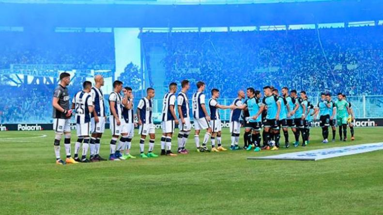

Épica final de la copa Argentina, Aldosivi 4, Belgrano de Córdoba 5, 3 insinerados
Una final que será recordado por siempre en la copa argentina, Belgrano sacó ventaja como visitante en un partido para el infarto despues de que 3 jugadores sufrieran una combustión instantanea a raiz de la nueva cepa turca. El presidente de Aldosivi culpó a la AFA, reclama que el partido debió suspenderse despues de la primera insineración y reclamo el fallo del VAR en el penal.